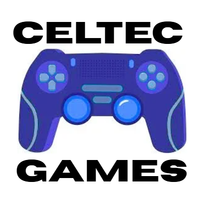

About Cetlec Games
What inspires us as a company, and how can we inspire you?
At celtec games, we are heavily inspired by other gaming companys such as Bethseda, Nintendo, Epic Games, etc. We take insporation from these companys to help build our games and give enjoyable experiences for all ages and backgrouds with the variety genres of games we offer. We also lean heavy on our slogan "The games of the future" as we think we have what it take to become the next big gaming producers. We hope to inspire other people and help them start their game creation journey as we offer an online course!

What we Believe
Creativity – Fresh ideas and bold concepts
Community – Listening to and engaging with our players
Quality – Polished gameplay and thoughtful design
Passion – Loving what we create and sharing it with the world
Our Story
Celtec Games was founded with one clear goal: to create original and memorable gaming experiences. What started as a passion for game development has grown into a studio focused on creativity, innovation, and strong community engagement. Every project we take on reflects our commitment to pushing ideas forward and delivering something players truly enjoy.
Our Development Process
1-Concept & Planning – Generating ideas and outlining the vision
2-Design & Prototyping – Testing mechanics and refining gameplay
3-Development – Building the game with careful attention to detail
4-Testing & Feedback – Improving the experience through player input
5-Launch & Support – Releasing and continuing to update the game
Whats Next?
Celtec Games is constantly exploring new ideas and future projects. We are committed to growth, learning, and improving with every release. The future is full of possibilities, and we are excited to continue building experiences that inspire players worldwide.